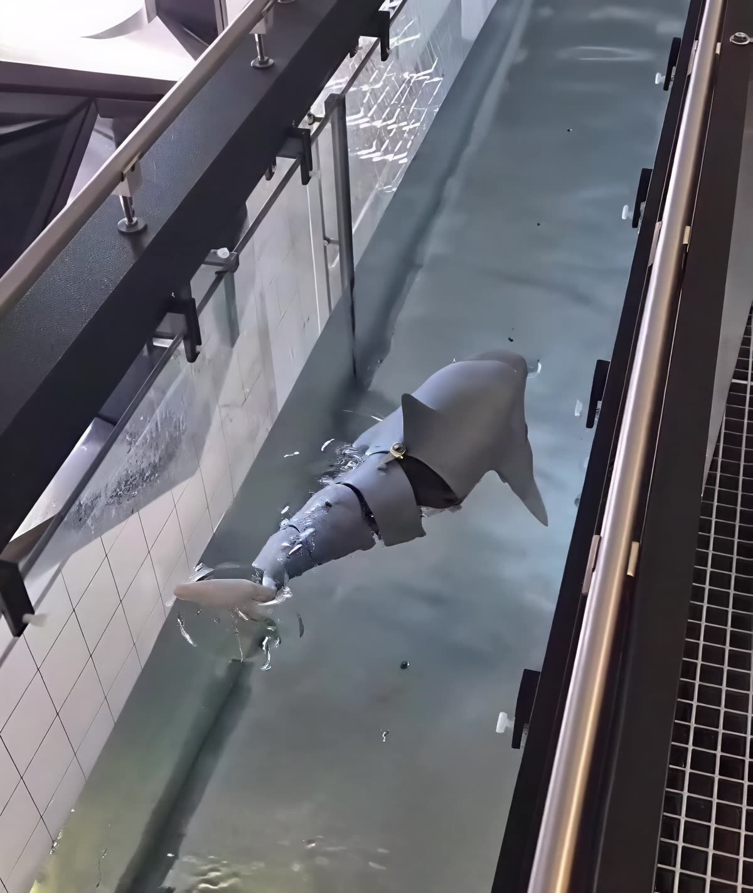

[ PLATE 01 — ADD img/auv.jpg ]
PLATE 01
Biomimetic AUV — design & build
Problem
Build a working submersible that propels itself the way aquatic animals do, rather than with a conventional propeller.
Approach
Co-designed and constructed the vehicle, then used computational analysis to validate the propulsion and structure before manufacture.
Outcome
A fully functional submersible, documented to full-detail manufacturing drawings costed for theoretical mass production.